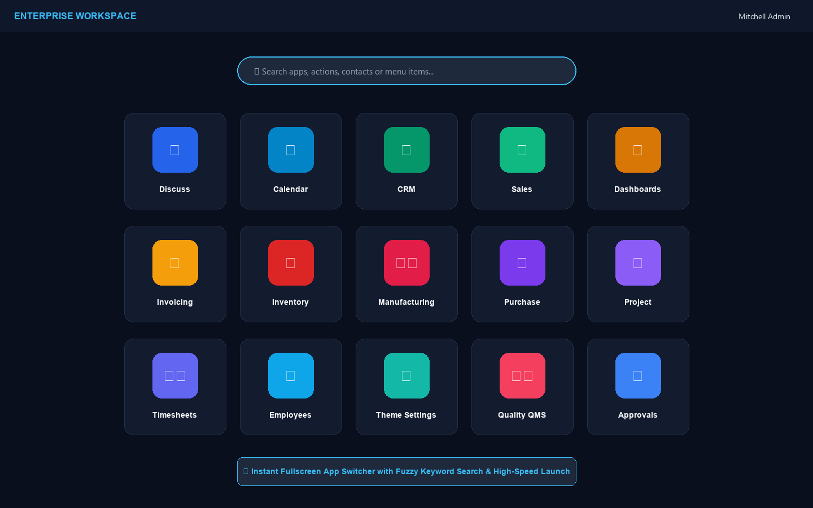
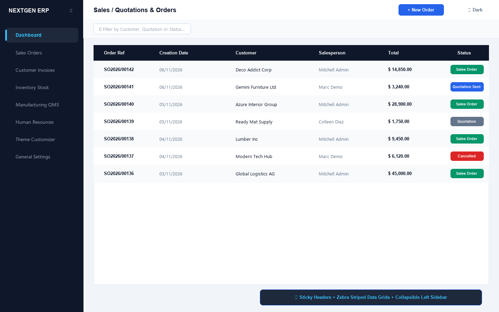
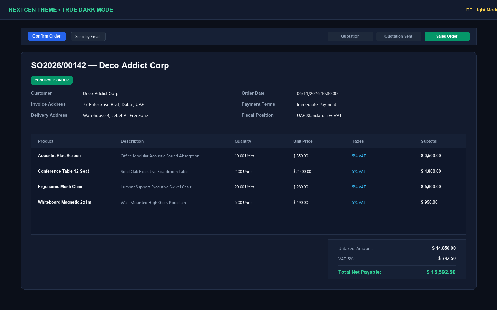
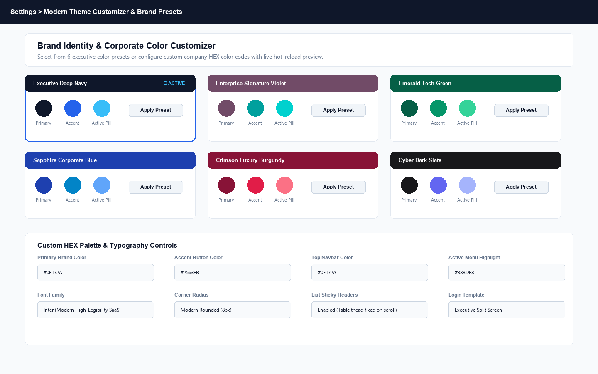
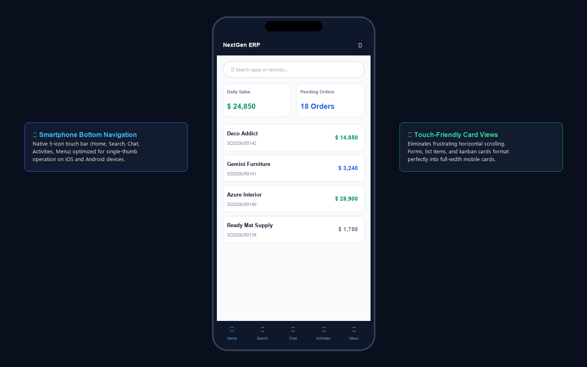
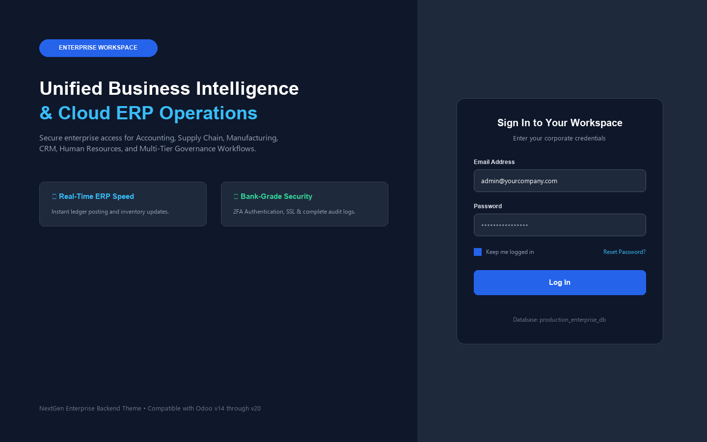

Transform Odoo Community and Enterprise into a luxury, high-speed SaaS workspace. Features the signature Enterprise Fullscreen App Switcher, Collapsible Left Sidebar, True Dark Mode, No-Code Brand Color Customizer, Sticky Data Grids, and Smartphone Bottom Navigation.
Experience silky-smooth app drawer transitions, 1-click true dark mode, and dynamic color customization
Fuzzy search across all apps with instant keyboard navigation.
High-contrast slate palette prevents eye strain on late shifts.
Toggle between topbar & collapsible SaaS sidebar with mobile bar.
Everything required to elevate Odoo into a world-class enterprise SaaS experience
Bring the signature Odoo Enterprise full-screen app grid to Community. Features instant fuzzy search to find apps, menus, and actions in milliseconds.
Switch between Enterprise Topbar and a sleek left collapsible sidebar with icon rails, tooltips, and flyout submenus.
Engineered with deep slate tones and high-contrast typography across form views, kanban stages, financial ledgers, and chatters.
Choose from 6 presets (Enterprise Violet, Deep Navy, Emerald Tech, Sapphire Blue, Crimson Luxury, Cyber Slate) or configure custom company brand colors.
Sticky table column headers remain visible during vertical scrolling on dense lists, with alternating zebra rows and locked form statusbars.
Replace the default login page with a high-end corporate split-screen featuring company value highlights, custom messaging, and secure authentication.
High-definition Retina preview across desktop, tablet, and smartphone viewports
Full-screen app launcher grid with frosted dark backdrop, responsive app tiles, and centered fuzzy search bar for launching any application instantly.

SaaS-style vertical sidebar navigation rail with expandable submenus, active pill indicator, and sticky data grid list view in the main window.

Eye-friendly deep slate palette (#0B0F19 / #131B2E) engineered with high-contrast text, custom inputs, colored status stages, and financial calculation cards.

Theme Settings dashboard providing 1-click preset switching (Executive Navy, Enterprise Violet, Emerald Tech, Sapphire Blue, Crimson Luxury, Cyber Slate) and custom HEX color controls.

Native bottom navigation bar (Home, Search, Chat, Activities, Menu) tailored for iOS and Android smartphones, eliminating horizontal scrolling and tiny tap targets.

Corporate split-screen authentication screen with high-impact value messaging, security badges, and responsive glass login card.

Follow this end-to-end testing workflow to evaluate all core features right after installation
Click the App Grid icon in the top-left navigation bar (or press ESC on your keyboard). Observe the smooth animated fullscreen app drawer with the fuzzy search bar. Type "Sales" or "Settings" and press Enter to launch.
In the top-right systray navigation bar, click the Moon / Sun icon. Notice how the entire interface instantly transitions to the deep slate dark palette with high-contrast form fields, kanban cards, and chatters.
Navigate to Settings > Theme Customizer > Theme Profiles. Open the active theme and switch Navigation Layout Style to Modern Left Collapsible Sidebar. Save the record to view the vertical navigation rail with collapsible icon mode.
Under the theme profile, select Enterprise Signature Violet (#714B67), Emerald Tech Green (#065F46), or Sapphire Blue and click Re-Apply Color Preset. Observe the automatic updating of topbar, buttons, active menu pills, and borders.
Open any long list view (e.g. Invoices, Sales Orders, or Contacts) and scroll down. Notice how table column headers remain locked at the top with shadow separation. Open any form view and verify that action buttons and the statusbar remain sticky.
Open browser Developer Tools (F12) and switch to Mobile Device Mode (e.g. iPhone 14 or Pixel 7). Observe the sticky bottom navigation bar with Home, Search, Chat, Activities, and Menu icons.
Log out of your session or open an incognito browser window navigating to /web/login. Inspect the branded corporate split-screen with company headline, security badges, and glass login container.
| Capability | Default Odoo / Generic Themes | NextGen Enterprise Theme Hub |
|---|---|---|
| Enterprise Fullscreen App Drawer | Missing in Community / Top Dropdown Only | Native Fullscreen Grid with Fuzzy Search |
| Dual Navigation (Topbar & Left Sidebar) | Rigid Single Layout | Admin Selectable Topbar or Collapsible Sidebar |
| True Dark Mode Suite | Crude Invert Filter / Buggy | True Deep Slate System across All Views |
| Brand Color Presets & HEX Customizer | Requires Hardcoding SCSS | 6 Executive Presets + No-Code HEX Pickers |
| Sticky Table Headers & Form Statusbar | Headers Scroll Out of View | Locked Table Header & Form Statusbar |
| Multi-Version Support (v14 to v19) | Breaks on Version Upgrades | Unified CSS Variables & OWL 2 Architecture |
Our team provides dedicated installation support, custom color palette configurations, company logo integrations, and seamless multi-version upgrade guidance across Odoo v14 through v19.